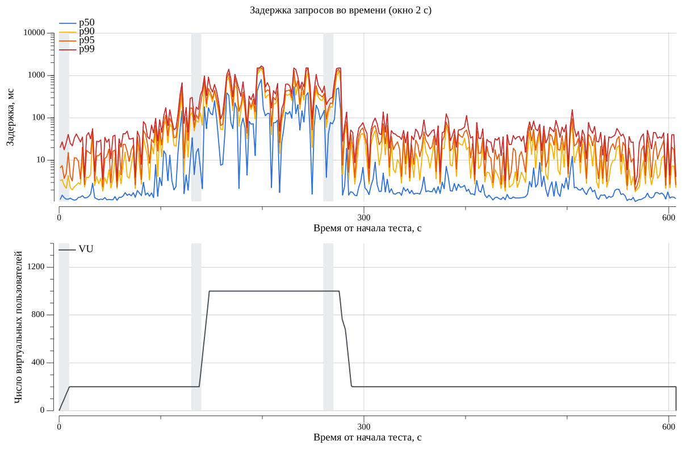
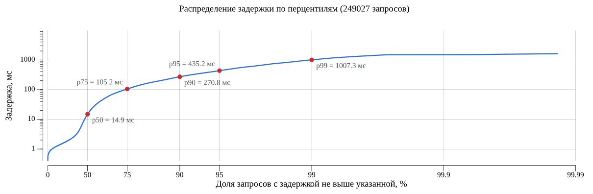
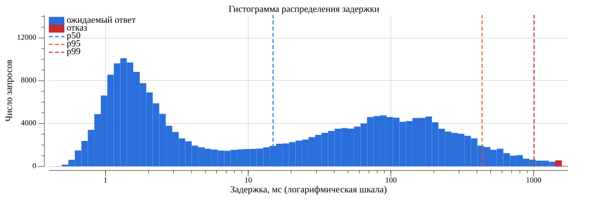
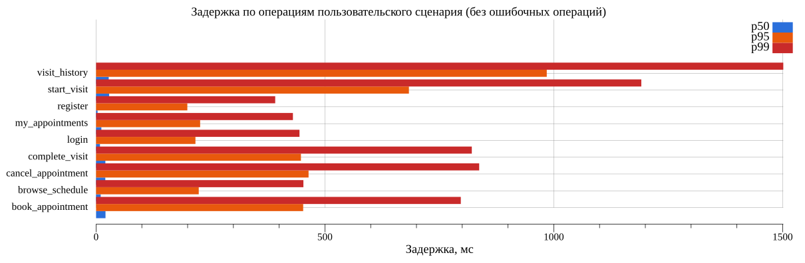
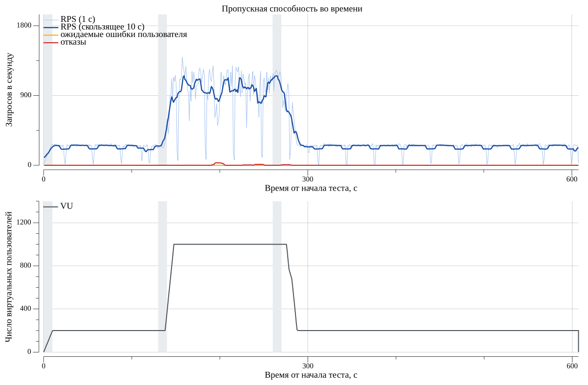
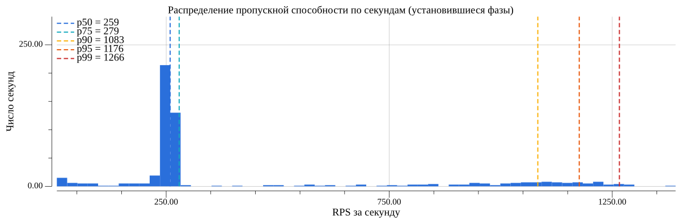
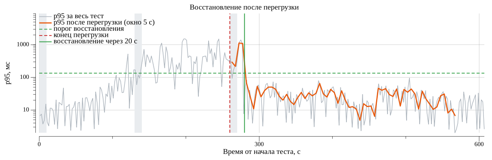
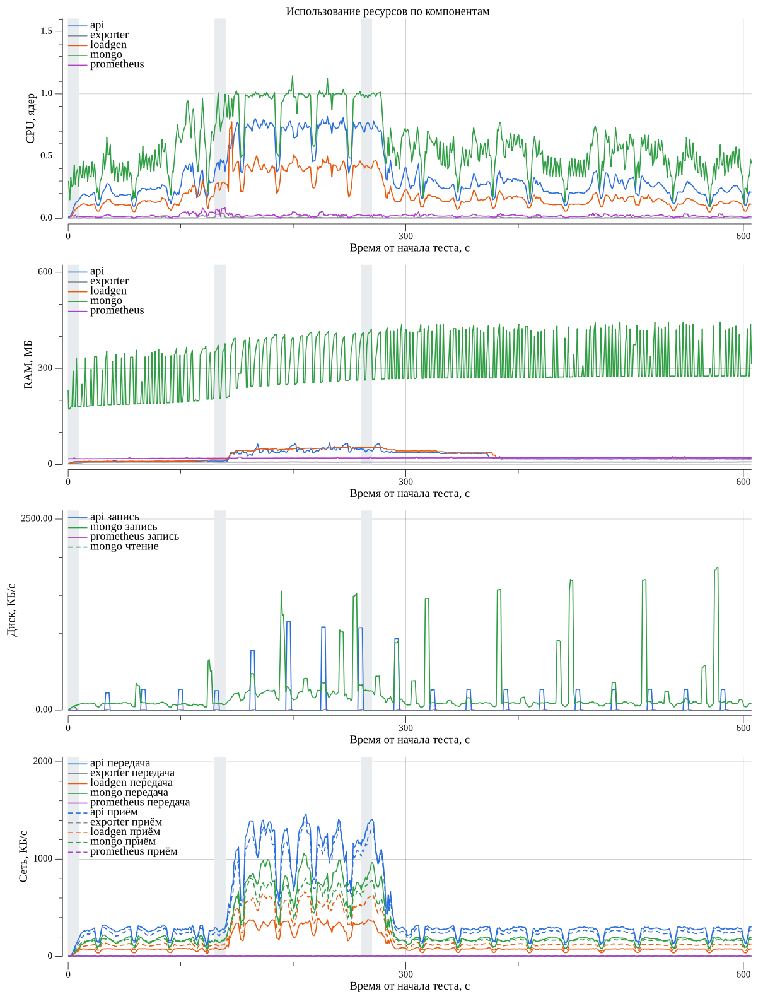

Перегрузка и восстановление
Запросов249026
RPS среднее / медиана410 / 259
p50 / p95 задержки14.9 / 435 мс
p99 задержки1007 мс
Отказы0.24%
Ошибочные операции0.00%
Базовая нагрузка: p95 67.5 мс, 231 RPS. Перегрузка: p95 603 мс, отказы 0.4%, 970 RPS. Восстановление после снятия перегрузки за 20.0 с.
Задержка
| Задержка, мс | count | min | mean | p50 | p75 | p90 | p95 | p99 | max |
|---|---|---|---|---|---|---|---|---|---|
| Все запросы | 249026 | 0.40 | 95.4 | 14.9 | 105 | 271 | 435 | 1007 | 1731 |
| Корректные операции | 249026 | 0.40 | 95.4 | 14.9 | 105 | 271 | 435 | 1007 | 1731 |
| Ошибочные операции | 0 | — | — | — | — | — | — | — | — |



Операции пользовательского сценария
| Операция | count | min | mean | p50 | p75 | p90 | p95 | p99 | max | Отказы | Ошибочные |
|---|---|---|---|---|---|---|---|---|---|---|---|
| book_appointment | 36128 | 0.80 | 102 | 20.6 | 137 | 308 | 452 | 797 | 1371 | 0.00% | 0.00% |
| browse_schedule | 36238 | 0.56 | 52.5 | 10.0 | 68.8 | 151 | 224 | 453 | 894 | 0.00% | 0.00% |
| cancel_appointment | 10735 | 0.75 | 104 | 20.2 | 138 | 300 | 464 | 837 | 1350 | 0.00% | 0.00% |
| complete_visit | 25026 | 0.71 | 99.7 | 20.3 | 133 | 286 | 448 | 821 | 1422 | 0.00% | 0.00% |
| login | 36361 | 0.40 | 50.2 | 8.51 | 66.2 | 145 | 217 | 444 | 852 | 0.00% | 0.00% |
| my_appointments | 36006 | 0.50 | 52.2 | 11.6 | 69.6 | 147 | 227 | 430 | 1018 | 0.00% | 0.00% |
| register | 7667 | 0.49 | 42.7 | 3.28 | 55.1 | 126 | 199 | 391 | 795 | 0.00% | 0.00% |
| start_visit | 25163 | 1.01 | 151 | 28.6 | 203 | 440 | 683 | 1191 | 1662 | 0.27% | 0.00% |
| visit_history | 35703 | 0.70 | 189 | 27.6 | 231 | 569 | 985 | 1501 | 1731 | 1.49% | 0.00% |

Пропускная способность
| Показатель | count | min | mean | p50 | p75 | p90 | p95 | p99 | max |
|---|---|---|---|---|---|---|---|---|---|
| RPS за секунду | 608 | 5.00 | 410 | 259 | 276 | 1089 | 1179 | 1265 | 1391 |


Фазы нагрузки
| Участок | VU | RPS ср. | RPS p50 | RPS p5 | p50 мс | p95 мс | p99 мс | Отказы | CPU api | CPU mongo | RAM api, МБ | SLO |
|---|---|---|---|---|---|---|---|---|---|---|---|---|
| разгон | 200 | 151 | 154 | 37.3 | 1.27 | 7.48 | 27.1 | 0.00% | 0.08 | 0.30 | 6.96 | да |
| базовая нагрузка | 200 | 236 | 254 | 78.0 | 1.61 | 43.2 | 121 | 0.00% | 0.23 | 0.48 | 9.63 | да |
| рост | 1000 | 283 | 256 | 229 | 13.1 | 144 | 279 | 0.00% | 0.43 | 0.84 | 10.7 | да |
| перегрузка | 1000 | 970 | 1066 | 187 | 91.8 | 603 | 1226 | 0.45% | 0.68 | 0.92 | 44.0 | нет |
| спад | 200 | 1161 | 1187 | 1038 | 62.5 | 261 | 380 | 0.00% | 0.73 | 0.99 | 45.1 | да |
| восстановление | 200 | 265 | 256 | 47.7 | 1.97 | 231 | 797 | 0.10% | 0.27 | 0.52 | 24.7 | да |
Перегрузка и восстановление
| Участок | VU | RPS ср. | RPS p50 | RPS p5 | p50 мс | p95 мс | p99 мс | Отказы | CPU api | CPU mongo | RAM api, МБ | SLO |
|---|---|---|---|---|---|---|---|---|---|---|---|---|
| эталон | 200 | 231 | 252 | 57.4 | 2.25 | 67.5 | 174 | 0.00% | 0.27 | 0.57 | 9.98 | да |
| перегрузка | 1000 | 970 | 1066 | 187 | 91.8 | 603 | 1226 | 0.45% | 0.68 | 0.92 | 44.0 | нет |
| после | 200 | 236 | 255 | 47.6 | 1.80 | 28.3 | 53.0 | 0.00% | 0.25 | 0.49 | 17.5 | да |

Использование ресурсов
| Компонент | Метрика | min | max | mean | median | p95 |
|---|---|---|---|---|---|---|
| api | CPU, ядер | 0.01 | 0.82 | 0.35 | 0.27 | 0.76 |
| api | Троттлинг CPU, с/с | 0.00 | 0.07 | 0.00 | 0.00 | 0.03 |
| api | Чтение с диска, КБ/с | 0.00 | 0.00 | 0.00 | 0.00 | 0.00 |
| api | Запись на диск, КБ/с | 0.00 | 1156 | 56.0 | 0.00 | 272 |
| api | RAM (working set), МБ | 3.23 | 68.0 | 24.9 | 17.7 | 51.2 |
| api | Сеть, приём КБ/с | 0.24 | 1389 | 420 | 256 | 1217 |
| api | Сеть, передача КБ/с | 0.10 | 1466 | 464 | 291 | 1322 |
| api | Процессы и потоки | 7.00 | 18.0 | 9.63 | 10.0 | 10.0 |
| exporter | CPU, ядер | 0.00 | 0.04 | 0.01 | 0.00 | 0.01 |
| exporter | Троттлинг CPU, с/с | 0.00 | 0.00 | 0.00 | 0.00 | 0.00 |
| exporter | Чтение с диска, КБ/с | 0.00 | 0.00 | 0.00 | 0.00 | 0.00 |
| exporter | Запись на диск, КБ/с | 0.00 | 0.00 | 0.00 | 0.00 | 0.00 |
| exporter | RAM (working set), МБ | 2.67 | 8.13 | 7.40 | 7.52 | 7.66 |
| exporter | Сеть, приём КБ/с | 0.23 | 0.56 | 0.45 | 0.48 | 0.48 |
| exporter | Сеть, передача КБ/с | 1.97 | 4.04 | 3.74 | 4.02 | 4.03 |
| exporter | Процессы и потоки | 4.00 | 6.00 | 5.62 | 6.00 | 6.00 |
| loadgen | CPU, ядер | 0.01 | 0.78 | 0.20 | 0.15 | 0.44 |
| loadgen | Троттлинг CPU, с/с | 0.00 | 0.00 | 0.00 | 0.00 | 0.00 |
| loadgen | Чтение с диска, КБ/с | 0.00 | 0.00 | 0.00 | 0.00 | 0.00 |
| loadgen | Запись на диск, КБ/с | 0.00 | 0.00 | 0.00 | 0.00 | 0.00 |
| loadgen | RAM (working set), МБ | 3.95 | 56.4 | 28.3 | 21.6 | 52.5 |
| loadgen | Сеть, приём КБ/с | 8.09 | 669 | 204 | 124 | 589 |
| loadgen | Сеть, передача КБ/с | 7.59 | 391 | 126 | 77.5 | 354 |
| loadgen | Процессы и потоки | 8.00 | 9.00 | 8.82 | 9.00 | 9.00 |
| mongo | CPU, ядер | 0.09 | 1.15 | 0.59 | 0.53 | 1.00 |
| mongo | Троттлинг CPU, с/с | 0.00 | 1.27 | 0.38 | 0.24 | 1.12 |
| mongo | Чтение с диска, КБ/с | 0.00 | 60.0 | 0.41 | 0.00 | 0.00 |
| mongo | Запись на диск, КБ/с | 8.00 | 1867 | 218 | 96.0 | 987 |
| mongo | RAM (working set), МБ | 173 | 446 | 308 | 276 | 431 |
| mongo | Сеть, приём КБ/с | 0.61 | 809 | 262 | 168 | 731 |
| mongo | Сеть, передача КБ/с | 0.47 | 1057 | 296 | 181 | 869 |
| mongo | Процессы и потоки | 39.0 | 154 | 123 | 137 | 150 |
| prometheus | CPU, ядер | 0.00 | 0.08 | 0.02 | 0.02 | 0.05 |
| prometheus | Троттлинг CPU, с/с | 0.00 | 0.00 | 0.00 | 0.00 | 0.00 |
| prometheus | Чтение с диска, КБ/с | 0.00 | 0.00 | 0.00 | 0.00 | 0.00 |
| prometheus | Запись на диск, КБ/с | 0.00 | 7.00 | 0.80 | 0.00 | 7.00 |
| prometheus | RAM (working set), МБ | 17.8 | 25.1 | 20.3 | 20.6 | 21.1 |
| prometheus | Сеть, приём КБ/с | 3.01 | 6.67 | 5.78 | 6.25 | 6.31 |
| prometheus | Сеть, передача КБ/с | 0.47 | 1.23 | 0.91 | 0.96 | 1.06 |
| prometheus | Процессы и потоки | 7.00 | 15.0 | 8.32 | 8.00 | 9.00 |

Коды ответов
| Код | Запросов |
|---|---|
| 200 | 179537 |
| 201 | 68890 |
| 500 | 599 |
Окружение прогона
| Компонент | Логические CPU | Квота CPU | Резерв RAM, МБ | Лимит RAM, МБ | Образ | ID образа |
|---|---|---|---|---|---|---|
| api | 0,1 | 1 | 512 | 512 | vitaline-lab6-api:20261115-204231-stress-nkzn | 579b68ac81b6 |
| exporter | 6,7 | — | 64 | 64 | vitaline-lab4-exporter:1 | 1d23c3f2327d |
| loadgen | 4,5 | — | 2048 | 2048 | vitaline-lab4-loadgen:1 | 48e1046c6d0e |
| mongo | 2,3 | 1 | 1024 | 1024 | mongo:7 | 9896df581dfd |
| prometheus | 6,7 | — | 768 | 768 | prom/prometheus:v3.5.0 | 63805ebb8d2b |